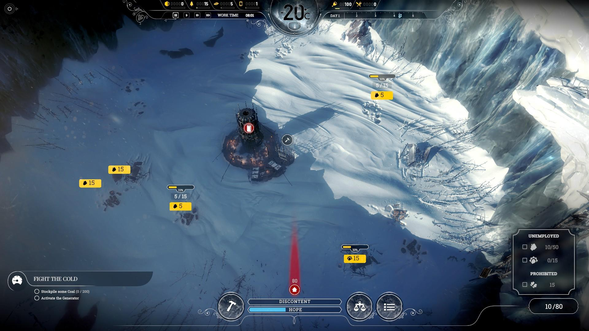
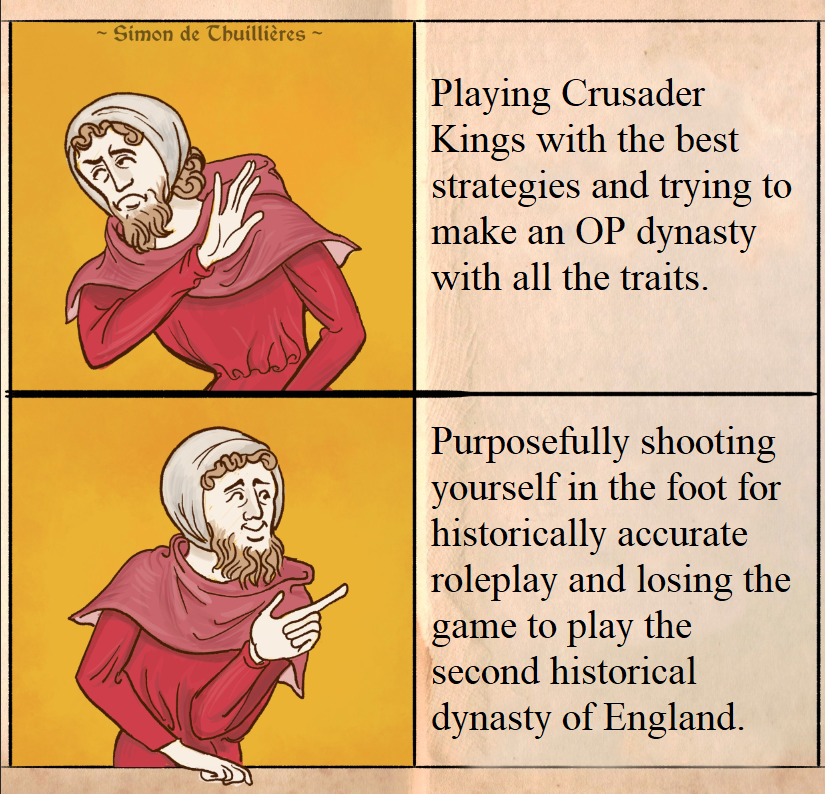

Mano vardas yra Linas, ir man labai patinka strateginiai žaidimai.
Tam yra kelios priežastys. Norint sužinoti, kodėl man taip patinka strateginiai žaidimai, paspauskite ant mygtukų.
Nuo 0 iki 100
Vienas mano mėgstamiausių strateginių žaidimų aspektų yra tai, kad jame tau niekas nieko neduoda - viską reikia surinkti ir sukurti pačiam. Šiuose žaidimuose žaidėjas pradeda su beveik niekuo, ir per laiką, per protingą planavimą ir pastangas, jis įgauna vis įdomesnių dalykų, tampa stipresniu, ir įtvirtina savo vietą žaidimo pasaulyje.

Neribotos galimybės
Antras svarbus strateginių žaidimų aspektas yra tai, kad juos nebutinai reikia žaisti vienu vieninteliu būdu. Dažniausiai nėra vienos krypties, kuri yra geriausia ir optimaliausia. Šiuose žaidimuose galima rinktis vis kitokį kelią, vis kitaip stengtis pasiekti savo tikslą, ir galima nuolatos keisti savo tikslus. Tokie žaidimai neverčia žaidėjo žaisti taip, kaip būtų skaitoma knyga, ir dažniausiai siųlo begales pasirinkimų visuose aspektuose.

Galvosūkiai
Trečias svarbus strateginių žaidimų aspektas yra juose esantys galvosūkiai, problemos, nenumatyti iššūkiai ir panašiai. Tokie žaidimai stipriai lavina žmogaus kritinio mąstymo sugebėjimus, kadangi žaidėją verčia nuolatos spręsti visokiausio tipo problemas. Neretai šios problemos iškyla vienu metu, ir žaidėjas privalo jas spręsti kartu, arba rizikuoja prarasti viską, ką iki šiol yra pasiekęs. Pastovus pavojus ir galimybė prarasti nemažą dalį to, ką jis yra pasiekęs, suteikia žaidimui daugiau prasmės, ir pasiekimai įgauna daugiau vertės.